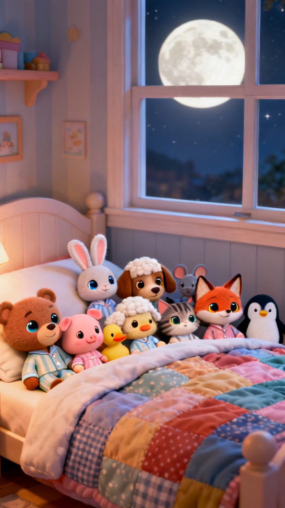
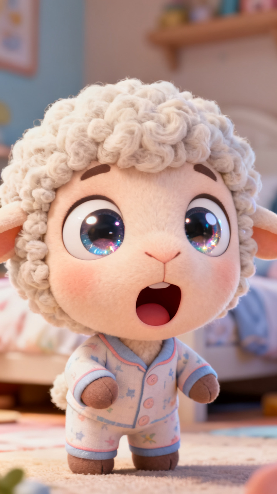
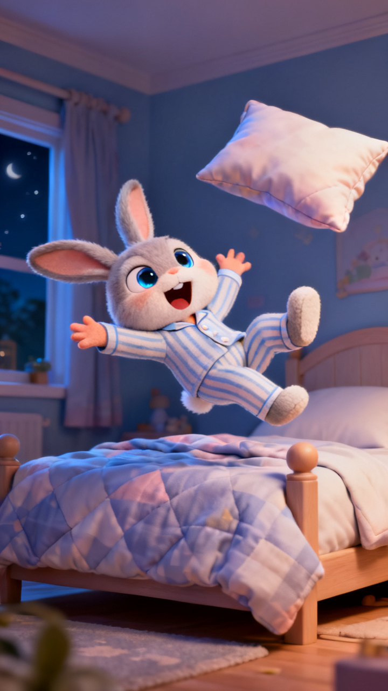
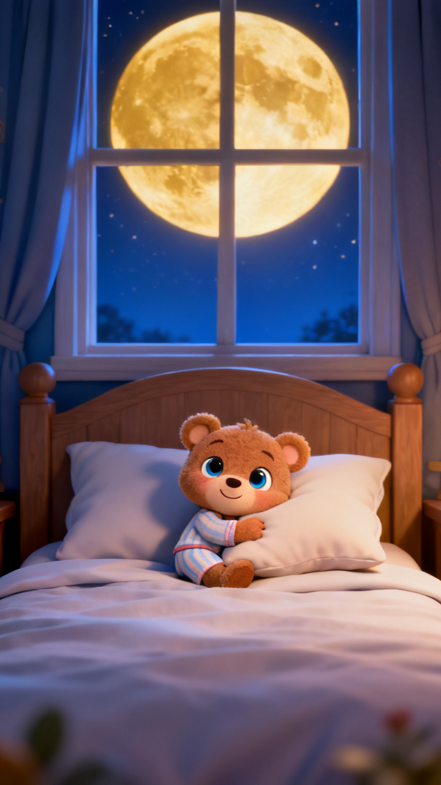

Story 8 · pitch
3D Pixar / CoComelon look · about the length of Alice · five ideas for making the middle actually fun. Tap every demo — they all really run.




Real frames from the render, not mock-ups — this is the look I'd build in. Same pipeline as Stone Soup, different style prompt.
Every scene in all seven stories is the same shape: a clip plays, a voice reads one sentence, occasionally a word slides up. Twenty scenes, one rhythm. Nothing the child does changes anything, and the music is a four-bar loop that never reacts to the story.
So the five ideas below are all about breaking that single rhythm — different kinds of scene, not just nicer art.
This is the whole CoComelon engine. The refrain becomes a real verse over a real beat — drums, bass, claps — with the words lighting up one at a time so a pre-reader can join in. Ten in the Bed already is a song, so the repetition stops being a weakness and becomes the hook. Ten verses, each one shorter than a paragraph of narration.
Live — the verse, with the backing track
Can the voice actually sing it? I tested — here are the real takes
Using the engine's own “singing” instruction.
Rhythmic, with a shouted “ROLL OVER!”
Worth knowing: the “singing” instruction doesn't really work. I measured both takes — pitch range 15.3 vs 13.8 semitones, holding a steady note 63% vs 66% of the time. They're the same thing. This engine does expressive speech, not melody, and no prompt wording gets around that.
So the design is: the instruments carry the tune, the voice chants the words on top of it — which is what the demo above is doing, and it works. If you want genuine singing later, that's a different tool and a separate decision.
Right now he watches. Here the story stops and waits for him: ten sleepy animals in the bed, and he taps each one to count it. Each tap wakes that animal, pops the number, and says it in English then Spanish. The scene doesn't move on until he's counted them. Same trick as the speaking turns, but for numbers — and uno to diez is real vocabulary, not "up" and "down".
Live — tap every sleeper
Tap them to count
My favourite of the five. Every verse loses one animal and one instrument. Ten in the bed is a full band; four is just bass and a shaker; one is a single music box and the tempo has slowed to a lullaby. The countdown becomes something he can hear, and the story ends by putting him to sleep on purpose. It also fixes your "music is boring" note at the root — the loop stops being wallpaper and starts being the narrator.
Live — press roll over and listen to it thin out
10in the bed
Every scene we've ever shipped is the same length and the same distance from the subject. Real kids' animation cuts constantly: a wide shot, then a half-second punch in on a shocked face, then the gag. Add a proper sound-effect layer — boing, thud, giggle — and the same footage becomes twice as lively. Costs no extra render time, it's purely editing.
Live — same shots, two edits
Purple = a held scene · pink = a quick cut
His animal and his name go into the bed with the others, and the verse calls his name every single time round. And the twist: he is never the one who falls out. When there is one in the bed, the one left is his. The whole story has been counting down to him. There are only 12 name-and-animal combinations in the app, so every personalised line can be pre-rendered — no extra cost at runtime.
Live — pick a companion and a name
That clip is the real counting voice — English then Spanish, the delivery I'd use for the tap-to-count moments.
Harder than the early books, and the numbers ride along free with the song.
Tell me which numbers you want and I'll build it. Happy to do all five — 3, 1 and 4 are the ones I'd hate to ship without.